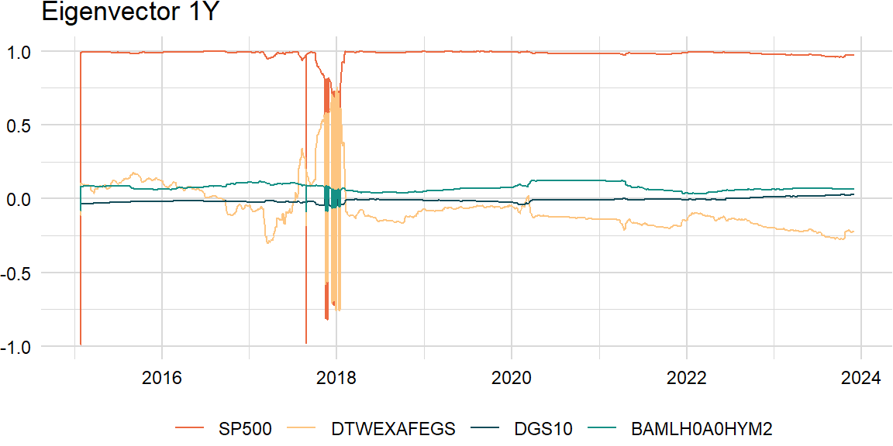
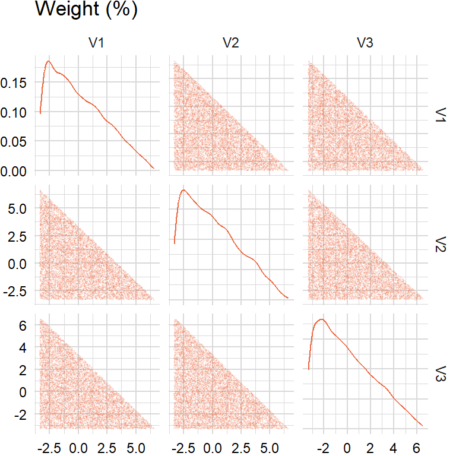
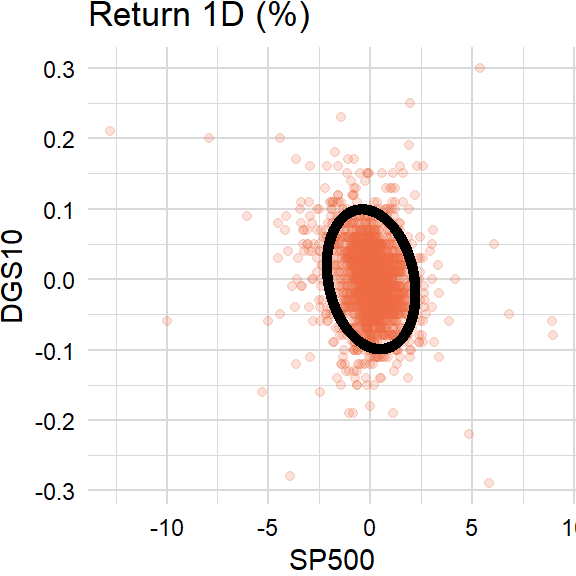
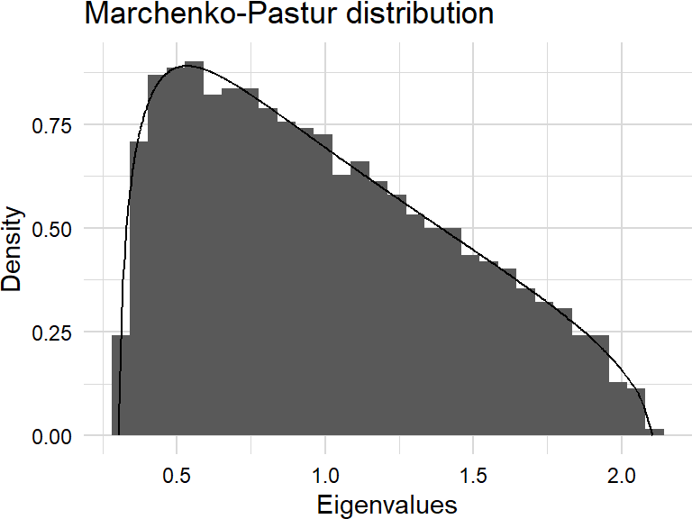
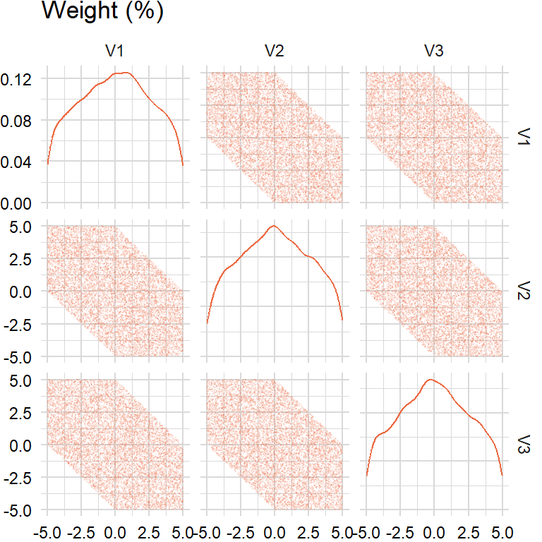
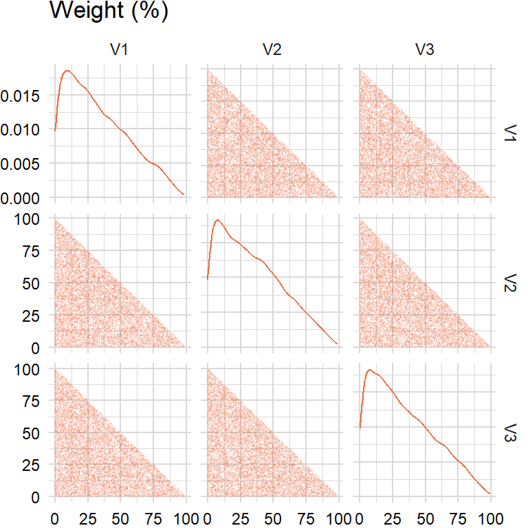
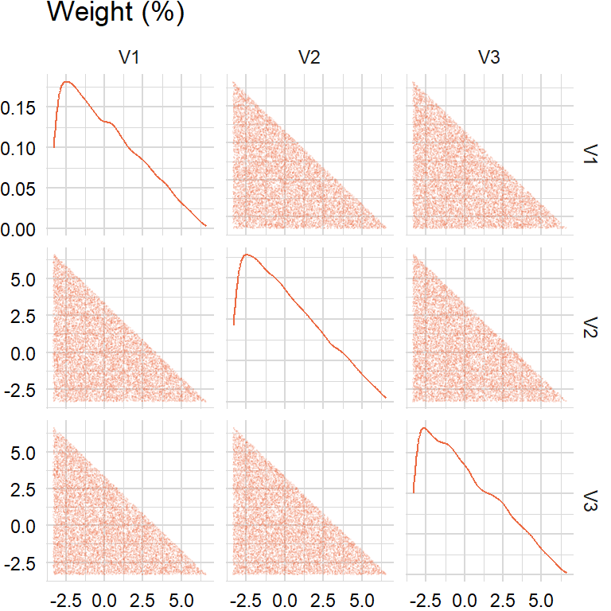
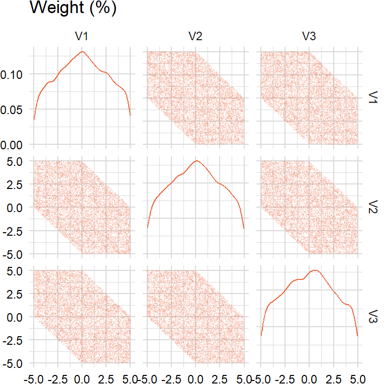

library(quantmod)
library(roll)
library(data.table)factors_r <- c("SP500", "DTWEXAFEGS") # "SP500" does not contain dividends; note: "DTWEXM" discontinued as of Jan 2020
factors_d <- c("DGS10", "BAMLH0A0HYM2")
factors <- c(factors_r, factors_d)
width <- 252
scale <- list("periods" = 252, "overlap" = 5)getSymbols(factors, src = "FRED")
levels_xts <- do.call(merge, c(lapply(factors, function(i) get(i)), all = TRUE))returns_xts <- do.call(merge, lapply(factors, function(i) {
if (i %in% factors_r) {
diff(log((levels_xts[ , i])))
} else if (i %in% factors_d) {
-diff(levels_xts[ , i]) / 100
}
}))
overlap_xts <- roll_mean(returns_xts, scale[["overlap"]], min_obs = 1, na_restore = TRUE)library(pls)
library(CVXR)tickers <- "BAICX" # fund inception date is "2011-11-28"
invisible(getSymbols(tickers, src = "tiingo", api.key = Sys.getenv("TIINGO_API_KEY"), adjust = TRUE))
prices_xts <- do.call(merge, c(lapply(tickers, function(i) Cl(get(i))), all = TRUE))
colnames(prices_xts) <- tickers
index(prices_xts) <- as.Date(index(prices_xts))returns_xts <- merge(returns_xts, diff(log(prices_xts)))
overlap_xts <- merge(overlap_xts, roll_mean(returns_xts[ , tickers], scale[["overlap"]], min_obs = 1))# weights <- 0.9 ^ ((width - 1):0)
weights <- rep(1, width)# overlap_df <- na.omit(overlap_xts)
overlap_x_df <- na.omit(overlap_xts)[ , factors]
overlap_y_df <- na.omit(overlap_xts)[ , tickers]
overlap_x_xts <- tail(overlap_x_df, width)
overlap_y_xts <- tail(overlap_y_df, width)Principal component analysis
Underlying returns are structural bets that can be analyzed through dimension reduction techniques such as principal components analysis (PCA). Most empirical studies apply PCA to a covariance matrix (note: for multi-asset portfolios, use the correlation matrix because asset-class variances are on different scales) of equity returns (yield changes) and find that movements in the equity markets (yield curve) can be explained by a subset of principal components. For example, the yield curve can be decomposed in terms of shift, twist, and butterfly, respectively.
Eigendecomposition
\[ \begin{aligned} \boldsymbol{\Sigma}&=\lambda_{1}\mathbf{v}_{1}\mathbf{v}_{1}^\mathrm{T}+\lambda_{2}\mathbf{v}_{2}\mathbf{v}_{2}^\mathrm{T}+\cdots+\lambda_{k}\mathbf{v}_{k}\mathbf{v}_{k}^\mathrm{T}\\ &=V\Lambda V^{\mathrm{T}} \end{aligned} \]
# https://www.r-bloggers.com/fixing-non-positive-definite-correlation-matrices-using-r-2/
eigen_decomp <- function(x, comps) {
LV <- eigen(cov(x))
L <- LV$values[1:comps]
V <- LV$vectors[ , 1:comps]
result <- V %*% sweep(t(V), 1, L, "*")
return(result)
}comps <- 1eigen_decomp(overlap_x_xts, comps) * scale[["periods"]] * scale[["overlap"]] [,1] [,2] [,3] [,4]
[1,] 0.021017707 -0.0047752924 5.866640e-04 1.439828e-03
[2,] -0.004775292 0.0010849622 -1.332920e-04 -3.271336e-04
[3,] 0.000586664 -0.0001332920 1.637546e-05 4.018969e-05
[4,] 0.001439828 -0.0003271336 4.018969e-05 9.863607e-05# cov(overlap_x_xts) * scale[["periods"]] * scale[["overlap"]]Variance explained
We often look at the proportion of variance explained by the first \(i\) principal components as an indication of how many components are needed.
\[ \begin{aligned} \frac{\sum_{j=1}^{i}{\lambda_{j}}}{\sum_{j=1}^{k}{\lambda_{j}}} \end{aligned} \]
variance_explained <- function(x) {
LV <- eigen(cov(x))
L <- LV$values
result <- cumsum(L) / sum(L)
return(result)
}variance_explained(overlap_x_xts)[1] 0.8564594 0.9901723 0.9965971 1.0000000Cosine similarity
Also, a challenge of rolling PCA is to try to match the eigenvectors: may need to change the sign and order.
\[ \begin{aligned} \text{similarity}=\frac{\mathbf{A}\cdot\mathbf{B}}{\|\mathbf{A}\|\|\mathbf{B}\|} \end{aligned} \]
eigen_vals <- function(x) {
LV <- eigen(cov(x))
L <- LV$values
return(L)
}
eigen_vecs <- function(x) {
LV <- eigen(cov(x))
V <- LV$vectors
return(V)
}roll_eigen1 <- function(x, width, comp) {
n_rows <- nrow(x)
result_ls <- list()
for (i in width:n_rows) {
idx <- max(i - width + 1, 1):i
evec <- eigen_vecs(x[idx, ])[ , comp]
result_ls <- append(result_ls, list(evec))
}
result <- do.call(rbind, result_ls)
result <- xts(result, index(x)[width:n_rows])
colnames(result) <- colnames(x)
return(result)
}comp <- 1raw_df <- roll_eigen1(overlap_x_df, width, comp)raw_mlt <- melt(as.data.table(raw_df), id.vars = "index")
raw_plt <- plot_ts(raw_mlt, title = "Eigenvector 1Y")
print(raw_plt)
# https://quant.stackexchange.com/a/3095
roll_eigen2 <- function(x, width, comp) {
n_rows <- nrow(x)
result_ls <- list()
for (i in width:n_rows) {
idx <- max(i - width + 1, 1):i
evec <- eigen_vecs(x[idx, ])[ , comp]
if (i > width) {
similarity <- evec %*% result_ls[[length(result_ls)]]
evec <- as.vector(sign(similarity)) * evec
result_ls <- append(result_ls, list(evec))
} else {
result_ls <- append(result_ls, list(evec))
}
}
result <- do.call(rbind, result_ls)
result <- xts(result, index(x)[width:n_rows])
colnames(result) <- colnames(x)
return(result)
}clean_df <- roll_eigen2(overlap_x_df, width, comp)clean_mlt <- melt(as.data.table(clean_df), id.vars = "index")
clean_plt <- plot_ts(clean_mlt, title = "Eigenvector 1Y")
print(clean_plt)
Contour ellipsoid
The contours of a multivariate normal (MVN) distribution are ellipsoids centered at the mean. The directions of the axes are given by the eigenvectors of the covariance matrix and squared lengths are given by the eigenvalues:
\[ \begin{aligned} ({\mathbf{x}}-{\boldsymbol{\mu}})^{\mathrm{T}}{\boldsymbol{\Sigma}}^{-1}({\mathbf{x}}-{\boldsymbol{\mu}})=c^{2} \end{aligned} \]
Or, in general parametric form:
\[ \begin{aligned} X(t)&=X_{c}+a\,\cos t\,\cos \varphi -b\,\sin t\,\sin \varphi\\ Y(t)&=Y_{c}+a\,\cos t\,\sin \varphi +b\,\sin t\,\cos \varphi \end{aligned} \] where \(t\) varies from \(0,\ldots,2\pi\). Here \((X_{c},Y_{c})\) is the center of the ellipse and \(\varphi\) is the angle between the x-axis and the major axis of the ellipse.
Specifically:
\[ \begin{aligned} &\text{Center: }\boldsymbol{\mu}=(X_{c},Y_{c})\\ &\text{Radius: }c^{2}= \chi_{\alpha}^{2}(df)\\ &\text{Length: }a=c\sqrt{\lambda_{k}}\\ &\text{Angle of rotation: }\varphi=\text{atan2}\left(\frac{V_{k}(2)}{V_{k}(1)}\right) \end{aligned} \]
# https://www.visiondummy.com/2014/04/draw-error-ellipse-representing-covariance-matrix/
# https://maitra.public.iastate.edu/stat501/lectures/MultivariateNormalDistribution-I.pdf
# https://en.wikipedia.org/wiki/Multivariate_normal_distribution
# https://en.wikipedia.org/wiki/Ellipse#General_parametric_form
ellipse <- function(n_sim, x, y, sigma) {
data <- cbind(x, y)
LV <- eigen(cov(data))
L <- LV$values
V <- LV$vectors
c <- sqrt(qchisq(pnorm(sigma), 2))
t <- seq(0, 2 * pi, len = n_sim)
phi <- atan2(V[2, 1], V[1, 1])
a <- c * sqrt(L[1]) * cos(t)
b <- c * sqrt(L[2]) * sin(t)
R <- matrix(c(cos(phi), -sin(phi), sin(phi), cos(phi)), nrow = 2, ncol = 2)
r <- t(rbind(a, b)) %*% R
result <- sweep(r, 2, colMeans(data), "+") # 2D only
return(result)
}returns_x_xts <- na.omit(returns_xts)[ , factors] # extended history
ellipse_x_xts <- ellipse(1000, returns_x_xts[ , 1], returns_x_xts[ , 3], 1)ellipse_plt <- plot_scatter(data.table(returns_x_xts[ , c(1, 3)]), x = "SP500", y = "DGS10",
title = "Return 1D (%)") +
geom_point(data = data.table(ellipse_x_xts), aes(x = V1 * 100, y = V2 * 100))
print(ellipse_plt)
Marchenko–Pastur distribution
Marchenko–Pastur distribution is the limiting distribution of eigenvalues of Wishart matrices as the matrix dimension \(m\) and degrees of freedom \(n\) both tend to infinity with ratio \(m/n\,\to \,\lambda\in(0,+\infty)\):
\[ \begin{aligned} d\nu(x)&={\frac {1}{2\pi\sigma ^{2}}}{\frac{\sqrt{(\lambda_{+}-x)(x-\lambda_{-})}}{\lambda x}}\,\mathbf{1}_{x\in[\lambda_{-},\lambda _{+}]}\,dx \end{aligned} \]
with
\[ \begin{aligned} \lambda_{\pm}&=\sigma^{2}(1\pm{\sqrt{\lambda }})^{2} \end{aligned} \]
# https://en.wikipedia.org/wiki/Marchenko%E2%80%93Pastur_distribution
# https://faculty.baruch.cuny.edu/jgatheral/RandomMatrixCovariance2008.pdf
dmp <- function(x, sigma = 1) {
LV <- eigen(cov(x))
L <- LV$values
lmbda <- ncol(x) / nrow(x)
lower <- sigma * (1 - sqrt(lmbda)) ^ 2
upper <- sigma * (1 + sqrt(lmbda)) ^ 2
d <- ifelse((L <= lower) | (L >= upper), 0,
1 / (2 * pi * sigma * lmbda * L) * sqrt((upper - L) * (L - lower)))
return(d)
}n_sim <- 5000
n_cols <- 1000data_sim <- matrix(rnorm(n_sim * n_cols), nrow = n_sim, ncol = n_cols)dmp_dt <- data.table(evals = eigen(cov(data_sim))$values,
dmp = dmp(data_sim))dmp_plt <- plot_density(dmp_dt, x = "evals", y = "dmp",
title = "Marchenko-Pastur distribution", xlab = "Eigenvalues", ylab = "Density")
print(dmp_plt)Warning: The dot-dot notation (`..density..`) was deprecated in ggplot2 3.4.0.
ℹ Please use `after_stat(density)` instead.
Random portfolios
Need to generate uniformly distributed weights \(\mathbf{w}=(w_{1},w_{2},\ldots,w_{N})\) such that \(\sum_{j=1}^{N}w_{i}=1\) and \(w_{i}\geq0\):
Approach 1: tempting to use \(w_{i}=\frac{u_{i}}{\sum_{j=1}^{N}u_{i}}\) where \(u_{i}\sim U(0,1)\) but the distribution of \(\mathbf{w}\) is not uniform
Approach 2: instead, generate \(\text{Exp}(1)\) and then normalize
Can also scale random weights by \(M\), e.g. if sum of weights must be 10% then multiply weights by 10%.
rand_weights1 <- function(n_sim, n_assets, lmbda) {
rand_exp <- matrix(runif(n_sim * n_assets), nrow = n_sim, ncol = n_assets)
result <- sweep(rand_exp, 1, rowSums(rand_exp), "/")
return(result)
}# Methodology: uniform sampling from the simplex (http://mathoverflow.net/a/76258)
# z ~ U(0, 1) then -ln(z) is an exponential(1) distribution
# This is also known as generating a random vector from the symmetric Dirichlet distribution
rand_weights2 <- function(n_sim, n_assets, lmbda) {
rand_exp <- matrix(-log(1 - runif(n_sim * n_assets)) / lmbda, nrow = n_sim, ncol = n_assets)
result <- sweep(rand_exp, 1, rowSums(rand_exp), "/")
return(result)
}# 1. Generate n exponential(1) random variables x_1, x_2, ..., x_n
# 2. Let y_i = x_i / (sum_{i = 1}^{n} x_i)
rand_weights3 <- function(n_sim, n_assets, lmbda) {
rand_exp <- matrix(rexp(n_sim * n_assets), nrow = n_sim, ncol = n_assets)
result <- sweep(rand_exp, 1, rowSums(rand_exp), "/")
return(result)
}lmbda <- 1
n_assets <- 3
n_sim <- 10000approach1 <- rand_weights1(n_sim, n_assets, lmbda)
approach2 <- rand_weights2(n_sim, n_assets, lmbda)
approach3 <- rand_weights2(n_sim, n_assets, lmbda)plot_pairs(as.data.table(approach1), title = "Weight (%)")
plot_pairs(as.data.table(approach2), title = "Weight (%)")
plot_pairs(as.data.table(approach3), title = "Weight (%)")
Random turnover
How to generate random weights between lower bound \(a\) and upper bound \(b\) that sum to zero?
Approach 1: tempting to multiply random weights by \(M\) and then subtract by \(\frac{M}{N}\) but the distribution is not between \(a\) and \(b\)
Approach 2: instead, use an iterative approach for random turnover:
- Generate \(N-1\) uniformly distributed weights between \(a\) and \(b\)
- For \(u_{N}\) compute sum of values and subtract from \(M\)
- If \(u_{N}\) is between \(a\) and \(b\), then keep; otherwise, discard
Then add random turnover to previous period’s random weights.
rand_iterative <- function(n_assets, lower, upper, target) {
plug <- FALSE
while (!plug) {
result <- as.matrix(runif(n_assets - 1, min = lower, max = upper))
temp <- target - sum(result)
if ((temp <= upper) && (temp >= lower)) {
plug <- TRUE
}
}
result <- append(result, temp)
return(result)
}rand_turnover1 <- function(n_sim, n_assets, lower, upper, target) {
rng <- upper - lower
result <- rand_weights3(n_sim, n_assets, lmbda) * rng
result <- result - rng / n_assets
return(result)
}rand_turnover2 <- function(n_sim, n_assets, lower, upper, target) {
result <- matrix(rand_iterative(n_assets, lower, upper, target), nrow = 1, ncol = n_assets)
while (nrow(result) < n_sim) {
temp <- matrix(rand_iterative(n_assets, lower, upper, target), nrow = 1, ncol = n_assets)
result <- rbind(result, temp)
}
return(result)
}lower <- -0.05
upper <- 0.05
target <- 0approach1 <- rand_turnover1(n_sim, n_assets, lower, upper, target)
approach2 <- rand_turnover2(n_sim, n_assets, lower, upper, target)plot_pairs(as.data.table(approach1), title = "Weight (%)")
plot_pairs(as.data.table(approach2), title = "Weight (%)")
Mean-variance
geometric_mean <- function(x, scale) {
result <- prod(1 + x) ^ (scale / length(x)) - 1
return(result)
}mu <- apply(returns_x_xts, 2, geometric_mean, scale = scale[["periods"]])
sigma <- cov(overlap_x_xts) * scale[["periods"]] * scale[["overlap"]]Maximum return
\[ \begin{aligned} \begin{array}{rrcl} \displaystyle\max_{x}&\mu^{T}\mathbf{w}\\ \textrm{s.t.}&\mathbf{w}^T\Sigma\mathbf{w}&\leq&\sigma^{2}\\ &e^T\mathbf{w}&=&1 \end{array} \end{aligned} \]
target <- 0.06# https://palomar.home.ece.ust.hk/MAFS6010R_lectures/slides_robust_portfolio.html
max_pnl_optim <- function(mu, sigma, target) {
params <- Variable(length(mu))
cons <- list(params >= 0, sum(params) == 1,
quad_form(params, sigma) <= target ^ 2)
obj <- Maximize(t(params) %*% mu)
result <- solve(Problem(obj, cons))$getValue(params)
return(result)
}params1 <- max_pnl_optim(mu, sigma, target)
params1 [,1]
[1,] 4.496723e-01
[2,] 5.503276e-01
[3,] 7.078720e-08
[4,] 4.321928e-08mu %*% params1 [,1]
[1,] 0.04216773sqrt(t(params1) %*% sigma %*% params1) [,1]
[1,] 0.06Minimum variance
\[ \begin{aligned} \begin{array}{rrcl} \displaystyle\min_{x}&\mathbf{w}^T\Sigma\mathbf{w}\\ \textrm{s.t.}&\mu^{T}\mathbf{w}&\geq&M\\ &e^T\mathbf{w}&=&1 \end{array} \end{aligned} \]
target <- 0.03min_risk_optim <- function(mu, sigma, target) {
params <- Variable(length(mu))
cons <- list(params >= 0, sum(params) == 1,
sum(mu * params) >= target)
obj <- Minimize(quad_form(params, sigma))
result <- solve(Problem(obj, cons))$getValue(params)
return(result)
}params2 <- min_risk_optim(mu, sigma, target)
params2 [,1]
[1,] 2.958446e-01
[2,] 5.096489e-01
[3,] 1.945065e-01
[4,] 1.254106e-21mu %*% params2 [,1]
[1,] 0.03sqrt(t(params2) %*% sigma %*% params2) [,1]
[1,] 0.04174501Maximum ratio
\[ \begin{aligned} \begin{array}{rrcl} \displaystyle\max_{x}&\mu^{T}\mathbf{w}-\frac{1}{2}\delta(\mathbf{w}^T\Sigma\mathbf{w})\\ \textrm{s.t.}&e^T\mathbf{w}&=&1 \end{array} \end{aligned} \]
ir <- 0.5
target <- ir / 0.06 # ir / std (see Black-Litterman)max_ratio_optim <- function(mu, sigma, target) {
params <- Variable(length(mu))
cons <- list(params >= 0, sum(params) == 1)
obj <- Maximize(t(mu) %*% params - 0.5 * target * quad_form(params, sigma))
result <- solve(Problem(obj, cons))$getValue(params)
return(result)
}params3 <- max_ratio_optim(mu, sigma, target)
params3 [,1]
[1,] 4.563530e-01
[2,] 5.436470e-01
[3,] -6.071938e-23
[4,] -1.009534e-22mu %*% params3 [,1]
[1,] 0.0425548sqrt(t(params3) %*% sigma %*% params3) [,1]
[1,] 0.06075687Risk parity
Risk parity is an approach to portfolio management that focuses on allocation of risk rather than allocation of capital. In a risk parity strategy, the asset allocations are leveraged, or deleveraged, to have equal risk contributions. Suppose that \(\mathbf{R}\) is a \(T \times N\) matrix of asset returns where the return of the \(i^{th}\) asset is \(R_{i,t}\) at time \(t\). Define \(\Sigma\) to be the covariance matrix of \(\mathbf{R}\) and let \(\mathbf{w}=(w_{1},\dots,w_{N})\) be a vector of asset weights. Then the volatility of the return of the strategy is \(\sigma_{P}=\sqrt{\mathbf{w}^T\Sigma\mathbf{w}}\) and, by Euler’s Theorem, satisfies:
\[ \begin{aligned} \sigma_{P}&=\sum_{i=1}^{N}w_{i}\frac{\partial\sigma_{P}}{\partial w_{i}}\\ &=w_{1}\frac{\partial\sigma_{P}}{\partial w_{1}}+\dots+w_{N}\frac{\partial\sigma_{P}}{\partial w_{N}} \end{aligned} \]
where each element is the risk contribution of the \(i^{th}\) risky asset. The risk parity objective solves for weights such that each asset contributes equal risk using the following nonlinear constrained optimization problem:
\[ \begin{aligned} \begin{array}{rrcl} \displaystyle\max_{x}&\displaystyle\sum_{i=1}^{N}\log(w_{i})\\ \textrm{s.t.}&\sqrt{\mathbf{w}^T\Sigma\mathbf{w}}&\leq&\sigma \end{array} \end{aligned} \]
To incorporate these conditions into one equation, introduce a new variable \(\lambda\) that is the Lagrange multiplier and define a new function \(\mathcal{L}\) as follows:
\[ \begin{aligned} \mathcal{L}(\mathbf{w},\lambda)&=\sum_{i=1}^{N}\log(w_{i})-\lambda(\sqrt{\mathbf{w}^T\Sigma\mathbf{w}}-\sigma) \end{aligned} \]
Then set the partial derivatives of \(\mathcal{L}\) equal to zero for each asset \(i\):
\[ \begin{aligned} \frac{\partial\mathcal{L}(\mathbf{w},\lambda)}{\partial w_{i}}&=\frac{1}{w_{i}}-\lambda\frac{\partial\sigma_{P}}{\partial w_{i}}=0 \Leftrightarrow w_{i}\frac{\partial\sigma_{P}}{\partial w_{i}}=\frac{1}{\lambda} \end{aligned} \]
Notice that \(1/\lambda\) is the risk contribution of the \(i^{th}\) asset. Now use R to maximize the Lagrangian numerically:
# http://faculty.washington.edu/ezivot/econ424/riskbudgetingslides.pdf
# https://systematicinvestor.wordpress.com/2011/11/16/black-litterman-model/
# https://cran.r-project.org/web/packages/BLCOP/vignettes/BLCOP.pdf
# http://math.stackexchange.com/questions/17776/inverse-of-the-sum-of-matrices
risk_parity_optim <- function(sigma, target) {
params <- Variable(nrow(sigma))
risk <- quad_form(params, sigma)
risk_contrib <- target ^ 2 / nrow(sigma)
obj <- Maximize((sum(log(params)) - (1 / risk_contrib) * (risk - target ^ 2)))
result <- solve(Problem(obj))$getValue(params)
result <- result / sum(result) # no leverage
return(result)
}target <- 1params5 <- risk_parity_optim(sigma, target)
params5 [,1]
[1,] 0.02997364
[2,] 0.13366437
[3,] 0.57124484
[4,] 0.26511714risk <- as.numeric(sqrt(t(params5) %*% sigma %*% params5))
risk_contrib <- params5 * sigma %*% params5 / risk
risk_contrib [,1]
SP500 0.002420125
DTWEXAFEGS 0.002420123
DGS10 0.002420123
BAMLH0A0HYM2 0.002420124mu %*% params5 [,1]
[1,] 0.004171147sqrt(t(params5) %*% sigma %*% params5) [,1]
[1,] 0.009680495data.frame("max_pnl" = params1,
"min_risk" = params2,
"max_ratio" = params3,
# "black_litterman" = params4,
"risk_parity" = params5) max_pnl min_risk max_ratio risk_parity
1 4.496723e-01 2.958446e-01 4.563530e-01 0.02997364
2 5.503276e-01 5.096489e-01 5.436470e-01 0.13366437
3 7.078720e-08 1.945065e-01 -6.071938e-23 0.57124484
4 4.321928e-08 1.254106e-21 -1.009534e-22 0.26511714Portfolio attribution
Single-period
The arithmetic active return is commonly decomposed using the Brinson-Fachler method:
\[ \begin{aligned} \text{Allocation: } &r_{a}=\sum_{k=1}^{n}(w_{p,k}-w_{b,k})(r_{b,k}-r_{b})\\ \text{Selection: } &r_{s}=\sum_{k=1}^{n}w_{p,k}(r_{p,k}-r_{b,k})\\ \end{aligned} \]
where \(k=1,\ldots,n\) is each sector or factor.
Multi-period
Arithmetic attributes add to the active return of a single period; however, they cannot be summed or compounded to explain the active return over multiple periods. To solve this problem, the original arithmetic attribute is multiplied by a single scaling coefficient for that period. After all single-period original attributes have been transformed, the adjusted attributes sum to the active return over the periods.
\[ \begin{aligned} \text{Carino scaling coefficient: } &c_{t}=\frac{[\ln(1+r_{p,t})-\ln(1+r_{b,t})]/(r_{p,t}-r_{b,t})}{[\ln(1+r_{p})-\ln(1+r_{b})]/(r_{p}-r_{b})} \end{aligned} \]
where \(t=1,\ldots,n\) is each period.
# http://www.frongello.com/support/Works/Chap20RiskBook.pdf
# https://github.com/R-Finance/PortfolioAttribution/blob/master/R/Carino.R
pnl_attrib <- function(params, x) {
total_i <- rowSums(x)
total <- prod(1 + total_i) - 1
coef <- (log(1 + total_i) / total_i) / (log(1 + total) / total)
result <- colSums(x * coef)
return(result)
}attrib_mat <- sweep(tail(na.omit(returns_xts)[ , factors], width), 2, params1, "*")pnl_attrib(params1, attrib_mat) SP500 DTWEXAFEGS DGS10 BAMLH0A0HYM2
9.715323e-02 -4.220013e-02 3.077217e-10 2.148297e-10